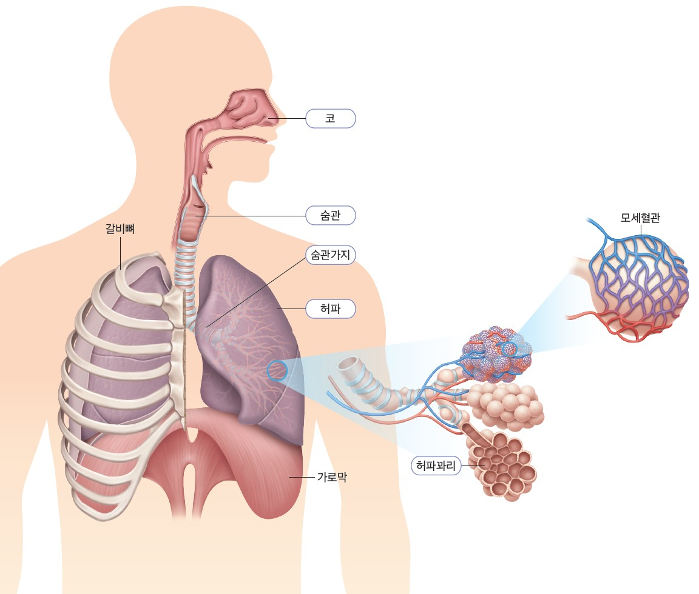

격렬하게 치어리딩 연습을 했을 때
왜 숨이 차고 땀이 비 오듯 솟아날까?

| 기관명 | 구조와 기능 |
|---|---|
| 콧속의 점액과 털은 공기의 먼지와 세균을 거름. | |
| 공기가 지나는 통로, 표면의 점액과 섬모운동으로 먼지와 세균을 거름. | |
| 숨관에서 양쪽으로 갈라져 좌우의 허파로 연결되며 허파에서 나뭇가지처럼 갈라져 허파꽈리로 연결됨. | |
| 양쪽 가슴에 한 개씩 들어있다. 근육이 없어서 스스로 수축하거나 이완할 수 없다. 무수히 많은 허파꽈리로 이루어져 있어서 표면적이 매우 넓다. | |
| 포도송이 모양의 공기주머니이며, 모세혈관으로 둘러싸여 있다. | |
| 흉강의 아래쪽에 있어서 배와 가슴을 분리하는 근육. |